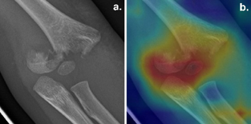
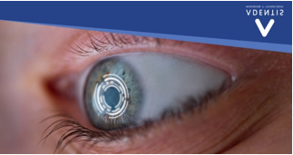
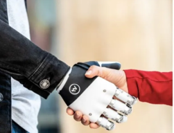
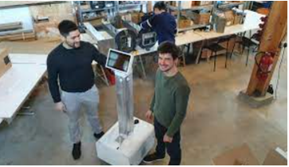
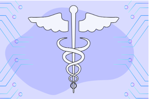
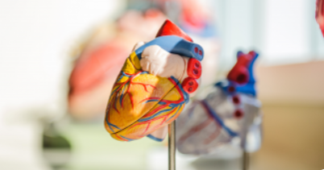

Veille technologique
Qu’est-ce que la veille technologique ?
- La veille en général se définit comme l’ensemble des actions de recherche,
de traitement et de diffusion de l’information utile sur un sujet donné, en vue de son exploitation.
On distingue quatre types de veille, la veille commerciale, la veille concurrentielle,
la veille environnementale et la veille technologique.
La veille technologique (ou veille scientifique et technique) consiste à se tenir informé de façon
coordonnée et dans le temps, sur les dernières innovations et technologies disponibles sur le marché et
sur leur mise à disposition commerciale.
Les avantages d’effectuer une veille technologique sont variés, tant au niveau de l’entreprise qu’au niveau personnel :
- - Anticiper la menace et trouver des solutions en amont
- - Être à l’écoute de son marché en permanence
- - Adapter sa stratégie des concurrents et saisir des opportunités
- - Découvrir de nouvelles technologies et renforcer ses connaissances
- - Optimiser sa carrière
Les sources pouvant être utilisées
- Les sources peuvent être formelles (documents) ou informelles (observations), internes à l’entreprise ou
externes.
Elles peuvent aussi être ouvertes (informations facilement accessibles) ou fermées (payantes, qui nécessitent
un
travail d’investigation, …)
Les types de sources les plus utilisés sont :
- - Les sites d’actualités (par exemple : Le Monde informatique, …)
- - Les bases de dépôts de brevets gratuites: Espacenet, Patentscope, …)
- - Les communiqués de presse des fournisseurs et des éditeurs
- - Les sites spécialisés
- La curation de contenu est une pratique qui consiste à sélectionner, éditer et partager les contenus les
plus pertinents du Web sur un sujet donné.
La curation rassemble différents contenus, les choisis, les tris, et en présente tout ou partie.
On trouve par exemple :
- - Feedly : le plus connu.
- - Google Alert : le plus simple.
- - Scoop.it : le mieux outillé
- - Pearltrees : le plus pédagogique.
- - Paper.li : le plus pratique.
Mon sujet de veille technologique
- J’ai choisi comme sujet de veille technologique : « l’intelligence
artificielle au service de la santé ».
En effet, je désire après le BTS poursuivre une licence dans une école où il est possible de choisir une spécialisation. Pour moi, ce sera IA & Data, car à terme, c’est dans le domaine de la robotique médicale que je désire faire carrière.
Ma démarche
- Pour effectuer ma veille, j’ai utilisé essentiellement :
- Feedly.com : ce service me permet de retrouver sur une même plateforme les informations des quotidiens les plus importants, les blogs, les chaînes YouTube. Je suis alerté à partir des mots clés choisis (robotique médicale, automatisation médicale, intelligence artificielle médicale, santé connectée, …). L'inscription à Feedly est gratuite via mon compte Google .
- Et aussi :
- Google Alertes : ce service gratuit me permet d’être tenu informé par mail des nouveautés mise en ligne qui concerne les mots clés choisis.
Ma sélection d’articles
- Une étape importante dans la veille technologique est le tri des informations.
Les utilisations de l’intelligence artificielle sont multiples dans le domaine de la santé, et de nombreux
articles sont publiés à ce sujet.
J’ai sélectionné des articles présentant aussi bien ce sujet en général que des articles sur des applications
spécifiques.
Thème: l’intelligence artificielle au service de la santé
L’intelligence artificielle à l’hôpital, au service des patients et des agents
Publié le 21 octobre 2021
Voir l'article

L’intelligence artificielle en radiologie : quels bénéfices ?Thibaut Jacques & Phiippe Preux
Publié le 22 octobre 2021
Voir l'article

« EC-Eye” : un œil bionique plus performant que l’œil humain d’ici cinq ans ? Mégane Lair
Publié le 22 novembre 2021
Voir l'articleL’intelligence artificielle au service du diagnostic médical Céline Lison
Publié le 26 novembre 2021
Voir l'articleL’intelligence artificielle au bloc opératoire Dr Joris Galland
Publié le 21 décembre 2021
Voir l'article

Une main “bionique” italienne pour les personnes ayant perdu leur membre Laurent Giraldon, Nicolas Ribeyre
Publié le 6 janvier 2022
Voir l'articleDes chercheurs utilisent l’IA pour prédire les prochains coronavirus Arnaud Lefebvre
Publié le 12 janvier 2022
Voir l'article

Nanobot, le robot écolo made in France qui tue le Covid. Marc Leras
Publié le 26 janvier 2022
Voir l'articleLes enjeux éthiques de l’intelligence artificielle Marine Houdre
Publié le 11 février 2022
Voir l'articleUn traitement automatisé des ordonnances, sécurisé et efficace
Publié le 21 février 2022
Voir l'articleUn robot chirurgical effectue une opération compliquée sans assistance humaine
Publié le 23 février 2022
Voir l'article

Intelligence artificielle : ses domaines d’application dans la médecine et la dentisterie en 2022
Publié le 28 février 2022
Voir l'articlePossibilités incroyables du marché mondial de l’automatisation médicale, croissance avec étude de l’industrie, analyse détaillée et prévisions Data Bridge Market Research
Publié le 5 mars 2022
Voir l'article
Robotique : le robot chirurgien STAR effectue des coelioscopies de façon autonome D’après une étude d’Axel Krieger
Publié le 11 mars 2022
Voir l'articleExploiter la reconnaissance faciale pour diagnostiquer des maladies rares Zacharie Tazrout
Publié le 15 mars 2022
Voir l'articleDes chercheurs munichois développent des méthodes d’IA pour la recherche biomédicale de nouvelle génération
Publié le 17 mars 2022
Voir l'article

Intelligence artificielle : Un algorithme pourrait prédire les risques de crise cardiaque
le 11 avril 2022
Voir l'articleUne équipe d’ingénieurs développe de nouveaux algorithmes d’IA pour des diagnostics d’images médicales de haute précision et rentables
le 13 avril 2022
Voir l'articleLes domaines d’utilisation
- La lecture de ces différents articles m’a permis de voir quelques applications intéressantes de l'Intelligence artificielle dans le domaine de la santé.
Elles sont nombreuses et variées, mais il est possible de les classer :
- - Par composant : équipement, logiciels, services
- - Par type : aide au diagnostic, surveillance automatisées de la santé, analyse d’images automatisées,
robotique médicale, chirurgie assistée par ordinateur, procédures thérapeutiques, laboratoire automatisés,
recherche pharmaceutique, amélioration du parcours des patients, prothèses intelligentes,
surveillance épidémiologique,objets connectés, …
- - Connectivité : filaire, sans fil
- - utilisateur final : hôpitaux, centre de diagnostic, pharmacies,
laboratoires et instituts de recherche, soins à domicile, cliniques spécialisées, centres de chirurgie ambulatoire, …
Les algorithmes
- Robots, assistants vocaux, enceintes connectées, reconnaissance faciale, analyse d’images, …,
sont autant
d'outils dont le fonctionnement est basé sur des algorithmes.
Et quand ces algorithmes ont la particularité d’être conçus de sorte que leur comportement évolue dans le temps,
en fonction des données qui leur sont fournies (machine learning, deep learning), on parle d'intelligence artificielle.
Le machine learning est une approche fondée sur des analyses statistiques permettant aux ordinateurs d’améliorer
leurs performances à partir de données, et à résoudre des tâches sans être explicitement programmées pour celles-ci.
Le Deep learning, est une méthode d’apprentissage automatique qui s’inspire du fonctionnement du système nerveux
des êtres vivants. Il s’est avéré très bon pour découvrir des structures complexes dans des données de haute dimension.
Les algorithmes de machine learning vont traiter des données quantitatives et structurées (des valeurs numériques), lorsque ceux de Deep Learning traiteront des données non-structurées, comme le son, le texte, l’image.
- Voici quelques exemples d’algorithmes pour :
- · L’apprentissage automatique au service des diagnostics : IBM Watson Health, Google Deepmind Health.
- · Les assistants virtuels pour accompagner les patients : Tavie, solution interactive avec une infirmière virtuelle personnalisée
- · Le machine learning appliqué en chirurgie : Da Vinci, un des robots chirurgiens le plus avancé du monde notamment pour les opérations oculaires
- · Optimisation de la gestion hospitalière : le machine learning est de plus en plus utilisé pour automatiser via l’intelligence artificielle les tâches administratives
- ·Traitements personnalisé : les objets connectés comme l’Apple Watch et son EEG fournissent les données pouvant permettre l’élaboration de soins personnalisés pour le patient
- · Pharmacie et R&D : projet MELLODDY d’utiliser les méthodes d’apprentissage automatique dans les chimiothèques (collection de molécules) de 10 sociétés pharmaceutiques.
Intelligence artificielle et éthique
- Il ne faut pas oublier le respect de l’éthique dans la santé ainsi que la confidentialité des données. Ainsi, il est utile d’utiliser les bienfaits de l’IA, mais il faut aussi concilier l’éthique avec ce progrès scientifique.
Les progrès et les bienfaits de l’IA dans la santé ne sont plus à démontrer. Cependant, cette évolution n’est pas sans risque.
- La déshumanisation des relations entre soignants et patients avec la multiplication des machines. L’empathie est un facteur qui aide le patient à guérir.
- L’inégalité des soins reçus par la population, en fonction des équipements des structures médicales
- La mauvaise transparence des algorithmes : les algorithmes ne sont toujours pas maîtrisables par les praticiens. De ce fait, on peut avoir une impossibilité à analyser le raisonnement des machines.
- Les atteintes à la vie privée (collectes d’informations personnelles, traçage, …)
Perspective professionnelle
-
La lecture de ces articles m’a montré que l’Intelligence Artificielle est une révolution technologique aux enjeux futurs considérables, aux multiples applications dans le domaine de la santé.
Les ingénieurs en intelligence artificielle sont chargés d’accomplir de nombreuses missions. Ces missions consistent notamment à développer, tester et déployer des modèles d’IA à l’aide d’algorithmes de programmation.
Cette veille technologique m’a renforcé dans mon désir d’y prendre part au niveau de la programmation pour associer intelligence humaine et intelligence artificielle.